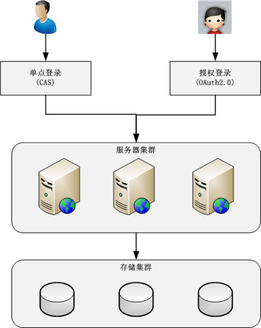
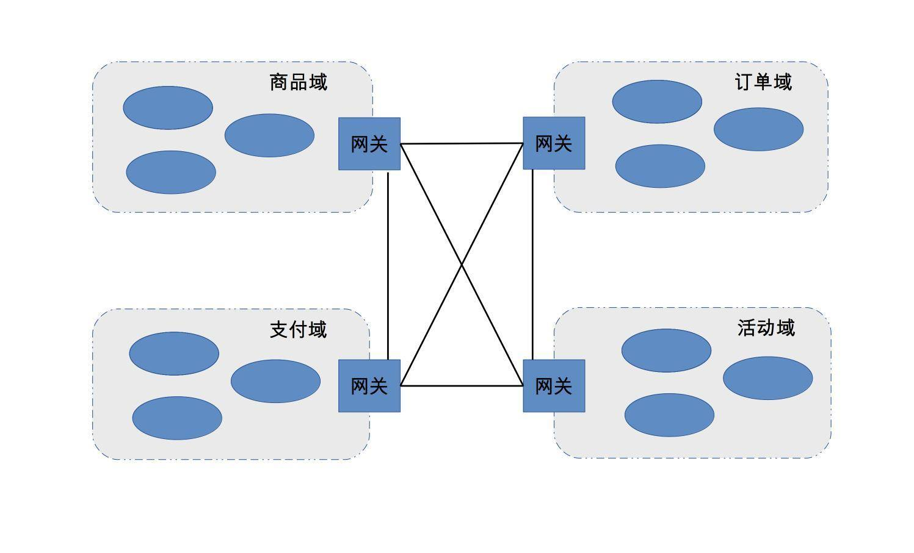

42-互联网架构模板：“用户层”和“业务层”技术
用户层技术
用户管理
互联网业务的一个典型特征就是通过互联网将众多分散的用户连接起来，用户管理是必不可少的。
稍微大一点的互联网业务，肯定会涉及多个子系统，这些子系统不可能每个都管理这么庞大的用户，由此引申出了用户管理的第一个目标：单点登录(SSO)，又叫统一登录。实现技术有：coookie、JSONP、token等。目前最成熟的开源单点登录方案是CAS。
当业务做大成为平台后，开放成为了促进业务进一步发展的手段，需要允许第三方应用接入，由此引申出了用户管理的第二个目标：授权登录。现在最流行的授权登录就是OAuth 2.0协议，基本已经成为了事实的标准，如果做开放的平台，则最好用这个协议。
用户管理系统面临的主要问题是用户数巨大，一般至少是上千万级，甚至上亿级。用户管理虽然数据量巨大，但是不同用户之间没有太强的业务关联，A用户的登录和B用户的登录基本没有关系。
用户管理的架构如下：

消息推送
消息推送根据不同的途径，分为短信、邮件、站内信、App推送。除了App,不同途径基本上调用不同的API即可完成，技术上没有什么难度。例如：短信依赖运营商的短信接口，邮件需要依赖邮件服务商的邮件接口，站内信是系统提供的消息接口。
App目前主要分为IOS和Android推送，IOS比较规范和封闭，基本上只能使用苹果的APNS。但安卓不一样，对于中小型公司，如果不涉及敏感数据，安卓系统上推荐使用每三方推送，如果涉及敏感数据，需要自己实现消息推送，就有一定的技术难度。主要包括以下几个方面：
海量设备和用户管理 消息推送的设备数量众多，存储和管理这些设备是比较复杂的。同时，为了针对不同用户推送不同的业务，还需要收集用户的一些信息。需要提取用户特征对用户进行分类。
连接保活 要想推送消息必须有连接通道，但是应用又不可能一直在前台运行，大部分设备为了省电省流量都会限制后台运行，限制后台运行就可能导致连接通道中断，导致消息无法及时到达。连接保活是整个消息推送系统中细节和黑科技最多的地方，例如：应用互相拉起，找手机厂商开白名单等。
消息管理 实际业务运营过程中，并不是每个消息都需要发送给每个用户，而是根据用户的特征，选择一些用户进行消息推送。由于用户特征变化很大、各种排列组合都有可能、将消息推送给哪些用户的逻辑要设计的非常灵活，才能支撑各种业务需求，具体的设计方案可以采用规则引擎之类的微内核架构技术。
存储云、图片云
互联网业务场景中，用户会上传多种类型的文件数据，如图片、视频等。这些文件具备以下几个特点：
- 数据量大
- 文件体积小
- 访问时效性：大部分文件刚上传的时候访问量最大，随着时间的推移访问量越来越小。
为了满足用户上传和存储的需求，需要对用户提供文件存储和访问的功能，可使用前文提到的“小文件存储”技术。通常存储云和图片云的基本实现是“CND+小文件存储”。对于中小型公司，一般不建议重新开发，可以直接买云服务即可。
存储云和图片云都是基于“CDN+小文件存储”技术，为什么要拆成二个呢？这是因为“图片”业务复杂导致的。普通的文件基本上提供存储和访问即可以了，而图片文件涉及的业务比较多，如裁剪、压缩、美化、审核、水印等处理，因此通常情况下图片云会拆分为独立的系统对用户提供服务。
业务层技术
各个互联网业务发展的最终面临问题都是：业务复杂度越来越高，也就是说业务层面对的主要技术挑战是“复杂度”。
复杂度越来越高的原因是系统越来越大，业务越来越多。解决的方法就在于一个字：拆。化整为零、分而治之，将整体复杂度分散到各个子系统中去。
随着子系统数量越来越多，如果达到几百上千，另外一个复杂度问题又会凸显出来：子系统数量太多、已经没有人说得清楚业务的调用流程，出了问题排查也特别复杂。此时该如果处理呢？最终的答案是：合。此时采取合的方式是按照：“高内聚、低耦合”的原则，将职责关联比较强的子系统合成一个虚拟业务域，然后通过网关对外统一呈现。以电商为例：采用虚拟业务域后，其架构如下图：
